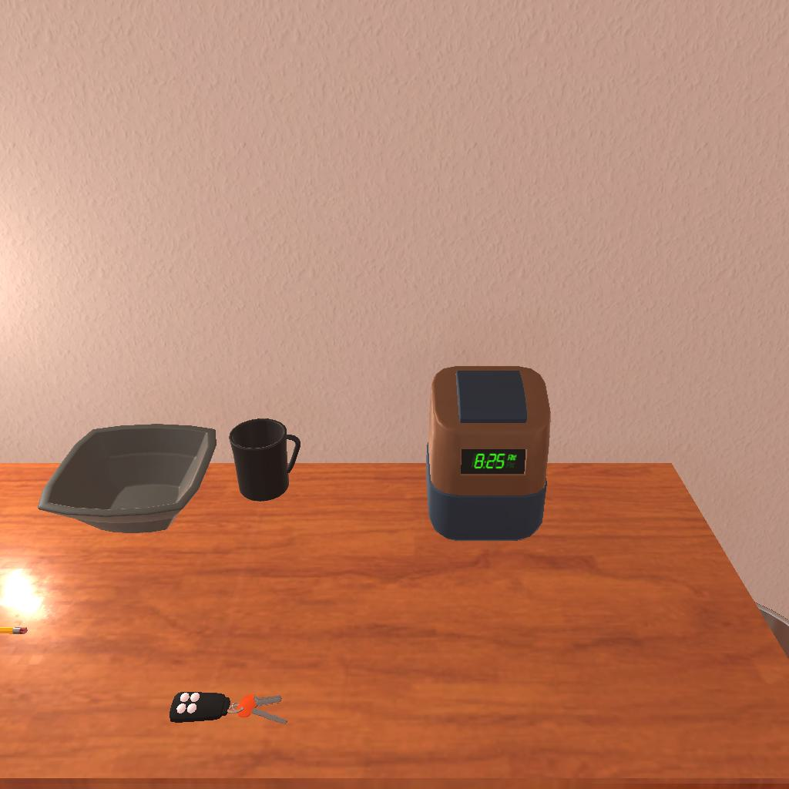

---------------------------------------------------------task: 6---------------------------------------------------------
--------------------------------------------------------------------------------------------------------------------------------------------------------------------
--------------------------------------------------------------------------------------------------------------------------------------------------------------------
Step:--------------------------------------------------------------------------5-------------------------------------------------------------------------------
----------------------------------------
VLM Prompt:
Image1:
Image2:
Image3:
**Instruction**
1. Analyze the provided images to identify all visible household objects and compare the difference between images (e.h. whether the object is opened or not and taken on hand or not), focusing on those relevant to the task description "put some cd on safe."
2. Use the analysis of images and the task hint "The agent must find an object of the desired type, pick it up, find the correct location to place it, and put it down there." to answer the question: what is the most reasonable action in the choices for the task description "put some cd on safe"?
3. Decide and write the answer using the template: The answer is: (i): , where i is the real number. If there is no desired object in images, search every place based on **Initial Observation** to find the object. And if no one is exactly correct, choose a similar answer.
**Initial Observation**
You are in the middle of a room. Looking quickly around you, you can see bed (1-2), dresser (1), sidetable (1-2), drawer (1-11), desk (1), garbagecan (1), safe (1)
**Answer Choices**
(1): go to bed 1
(2): go to dresser 1
(3): go to bed 2
(4): go to sidetable 1
(5): go to drawer 1
(6): go to drawer 2
(7): go to sidetable 2
(8): go to drawer 3
(9): go to drawer 4
(10): go to garbagecan 1
(11): go to drawer 5
(12): go to drawer 6
(13): go to drawer 7
(14): go to drawer 8
(15): go to drawer 9
(16): go to drawer 10
(17): go to drawer 11
(18): open safe 1
(19): close safe 1
(20): examine safe 1
**Answer**
Let's think step by step by following the instructions.
----------------------------------------
----------------------------------------
Original Response:
First, we need to identify all visible household objects in the images that are relevant to the task description "put some cd on safe."
In Image1, we can see a bedside table next to the bed with a drawer and some objects on it, including a smartphone and a pencil. There is no CD visible in this image.
In Image2, we observe a desk with various objects, including a clock showing the time 8:25, a mug, a tray, a remote control, and a key. Again, there is no CD visible here.
In Image3, we can see a safe, a tray, a mug, a pen, and a donut on a plate. Most importantly, there is a CD next to the mug, which is the object we need for our task.
Now, according to the task hint, the agent must find the CD, pick it up, find the safe, and put the CD on the safe. Since the CD is visible on the desk (Image3), the agent should first pick up the CD. After that, the agent needs to go to the safe to place the CD on it.
Since the CD is visible on the desk in Image3, and the safe is also in the same image, the most reasonable action for the agent to perform next is to pick up the CD from the desk and put it on the safe.
However, the provided answer choices do not include an action for picking up the CD or putting it on the safe. The closest action related to the CD is examining the safe, which is likely to be done after placing the CD on it.
Therefore, since the task is to put the CD on the safe and the CD is already found, the next reasonable action would be to interact with the safe. Since opening the safe is not necessary to place the CD on it, and closing the safe is irrelevant at this point, the best option from the given choices would be to examine the safe to ensure it is the correct location for placing the CD.
The answer is: (20): examine safe 1
----------------------------------------
----------------------------------------
>>> Refine Original VLM Response and Get Pure Action: examine safe 1
----------------------------------------
-----------------------------------------------------------------
Running time: 17.35431718826294 seconds
Total Money: 2.7628900000000005
-----------------------------------------------------------------
-----------------------------------------------------------------
Text Observation:On the safe 1, you see a bowl 2, a mug 2, a cd 1, and a pen 1.
-----------------------------------------------------------------
UNSUCCEED